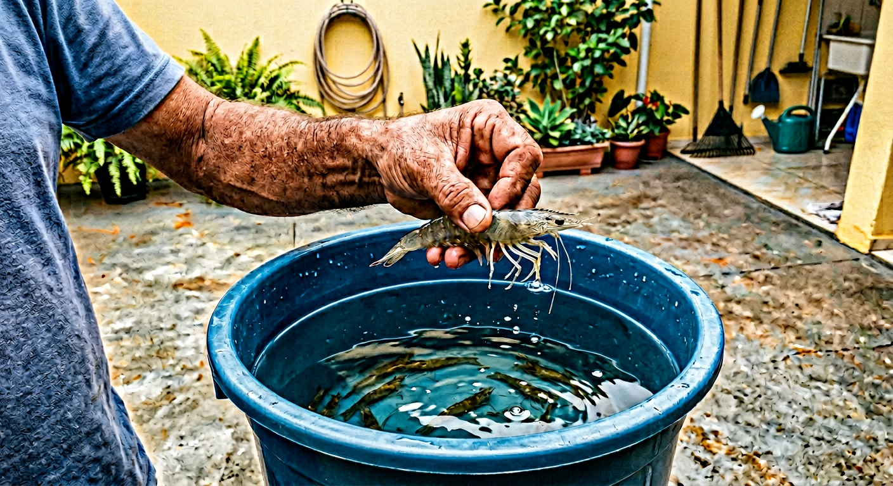
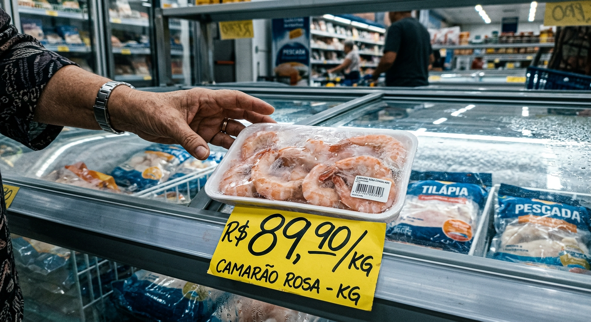
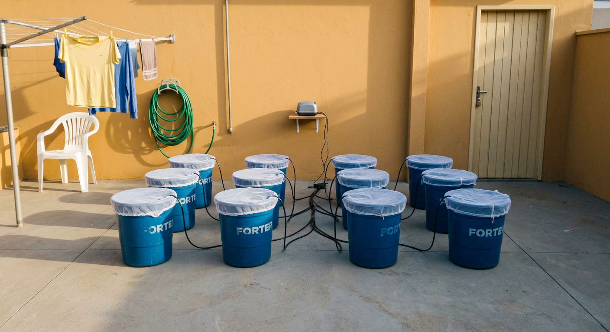
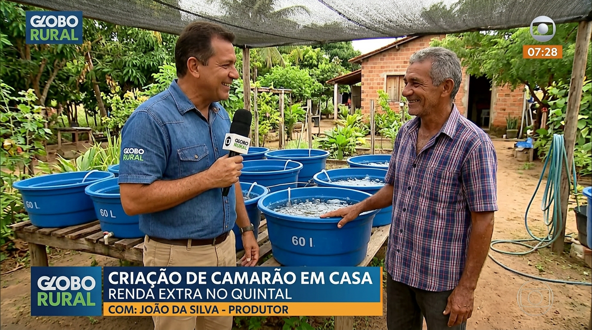
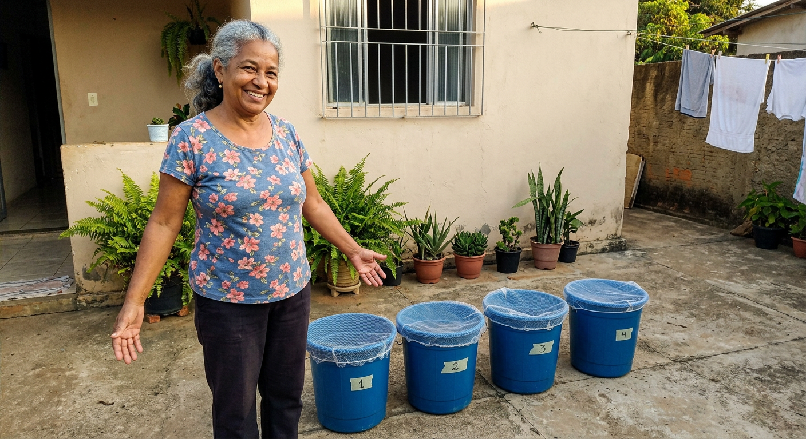

Mesmo sem experiência, sem terreno grande e sem gastar fortuna em equipamento.

Camarão produzido em balde de 50 litros no quintal — custo médio por kg: R$ 11. Preço de venda: R$ 70 ou mais.
✓ Acesso imediato · ✓ Garantia incondicional de 7 dias

O quilo do camarão saltou de R$ 45 para mais de R$ 80 nos últimos anos. Em muitas peixarias, já passa de R$ 90 o kg. E a tendência é continuar subindo — a demanda só cresce, a oferta não acompanha.
Enquanto isso, dezenas de vídeos soltos no YouTube mostram "como criar camarão em casa"... e a maioria das pessoas que tenta seguir esses tutoriais perde o lote inteiro na primeira ou segunda semana.
Por quê? Porque a informação está fragmentada. Um vídeo fala da água, outro da ração, outro da temperatura — e um único erro (pH errado, oxigenação baixa, alimentação errada) mata o lote de uma vez.
Aprender sozinho, do jeito errado, custa tempo, dinheiro e frustração. Foi pra resolver exatamente isso que criamos o Método Balde de Ouro.
O sistema completo, passo a passo, dividido em 5 pilares simples que qualquer pessoa consegue seguir — mesmo sem experiência nenhuma:
Como preparar a água perfeita pros camarões (pH, temperatura, oxigenação) usando só um balde e ferramentas baratas de farmácia.
O que dar de comer, quanto dar e quando dar. Receitas caseiras + onde comprar ração barato.
Como manter os camarões vivos e saudáveis do começo ao fim. Sinais de alerta e como agir rápido.
O ciclo completo de 90 dias: da pós-larva ao camarão adulto pronto pra venda.
Onde e como vender: peixarias, restaurantes, WhatsApp, vizinhos. Script de venda pronto.
Manual completo ilustrado com mais de 80 páginas, passo a passo do zero até sua primeira venda.
Valor: R$ 197Projeto detalhado com medidas, materiais e lista de compras — é só montar seguindo o passo a passo.
Valor: R$ 147Calcule exatamente quanto vai gastar e quanto vai faturar, mesmo se você nunca mexeu com planilha.
Valor: R$ 47Mensagens prontas pra copiar e colar pra oferecer seu camarão a vizinhos, peixarias e restaurantes.
Valor: R$ 47Passo a passo pra mapear os melhores clientes perto de você, sem depender de anúncio nem de internet.
Valor: R$ 37Valor total: R$ 475 · Você paga hoje apenas R$ 97
Veja quanto você pode faturar por mês, conforme o número de baldes que você montar:

* Cálculo conservador baseado no preço médio de venda de R$ 70/kg e ciclo médio de 90 dias.
Programas e matérias sobre aquicultura de pequena escala mostram o crescimento dessa oportunidade no Brasil:

📺 Reportagem em programa rural brasileiro: "Criação de camarão em casa — renda extra no quintal"
📈 Segundo dados da EMBRAPA e do IBGE, a aquicultura de pequena escala é um dos setores que mais cresce no Brasil — com destaque para a produção caseira de camarão de água doce (macrobrachium rosenbergii), que tem ciclo curto, alta demanda e preço de venda em alta.

Moradora do interior de Minas Gerais, Dona Maria começou com 2 baldes na área de serviço há 7 meses. Hoje fornece camarão fresco semanalmente para 3 peixarias da região — fatura em média R$ 1.200 por mês, trabalhando cerca de 30 minutos por dia.
"Nunca pensei que fosse tão simples. O método é passo a passo mesmo, não tem segredo nenhum."
O Balde de Ouro é um projeto dedicado a levar técnicas de aquicultura de pequena escala para quem quer uma renda extra de verdade — sem enrolação, sem promessa mirabolante e sem precisar gastar fortuna.
Nosso compromisso é simples: entregar um método testado, claro e aplicável, pra que qualquer pessoa, com qualquer nível de experiência, consiga montar sua própria produção caseira.
🔒 Pagamento 100% seguro · Acesso liberado em minutos
Você compra hoje, recebe tudo na hora, lê o ebook, aplica o método e coloca o projeto em prática.
Se em 7 dias você achar que não é pra você — por qualquer motivo — a gente devolve 100% do seu dinheiro.
Sem pergunta, sem burocracia, sem complicação. É só mandar um e-mail pedindo e pronto.
Não. Quando a água é mantida corretamente (o que o ebook ensina passo a passo), não tem cheiro nenhum. Quem tem cheiro ruim é quem descuida. O método mostra exatamente como evitar isso.
A mortalidade é praticamente zero quando você segue o método. O ebook cobre os 5 erros que matam lote e como evitar cada um. Mesmo em caso de problema, o projeto inclui procedimento de recuperação.
O setup inicial mais básico custa entre R$ 80 e R$ 150 (balde, mangueira de aeração, pós-larvas e ração). A planilha que vem de bônus calcula tudo pra você.
Sim, desde que você tenha uma varanda ou área de serviço com pelo menos 1m² disponível. Para começar 1 ou 2 baldes, qualquer espaço pequeno já serve.
O guia "Onde Vender na Sua Cidade" e o Script de Vendas pelo WhatsApp te mostram exatamente como encontrar peixarias, restaurantes, vizinhos e grupos locais dispostos a comprar. A demanda é muito maior que a oferta.
Para começar e vender em pequena escala (vizinhança, WhatsApp, peixarias locais), não é obrigatório. Quando o negócio crescer, o ebook orienta sobre como formalizar como MEI, processo simples e barato.
O ciclo completo do camarão é de aproximadamente 90 dias. Seguindo o método, em 3 meses você faz sua primeira colheita e primeira venda.
Serve, desde que seja tratada corretamente antes (o ebook mostra o procedimento — leva menos de 24h e custa praticamente nada).
Sim. Você tem suporte por e-mail para tirar qualquer dúvida sobre o conteúdo do método.
Imediatamente após a confirmação do pagamento, você recebe um e-mail com o link de acesso a todos os materiais em PDF. Pode baixar e ler no celular, no computador, ou imprimir.
Tudo é feito pra ser simples. O ebook abre em qualquer celular ou computador, é só clicar no link. E se tiver alguma dificuldade, a gente te ajuda pelo e-mail.
1) Fechar essa página e continuar pagando caro no camarão do mercado — sem nunca ter essa renda extra que você tanto precisa.
2) Aproveitar a condição de lançamento, começar seu mini-negócio por apenas R$ 97 e, em 90 dias, fazer sua primeira venda.
QUERO COMEÇAR AGORA — R$ 97✓ 7 dias de garantia · ✓ Acesso imediato · ✓ Valor promocional